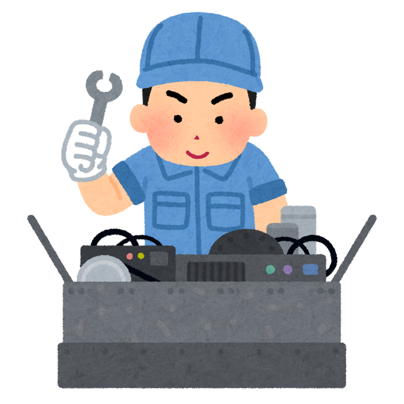
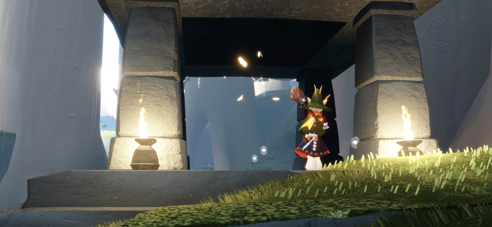
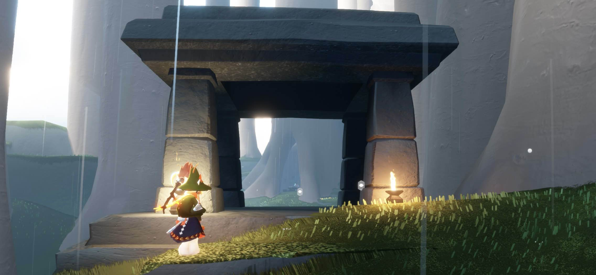
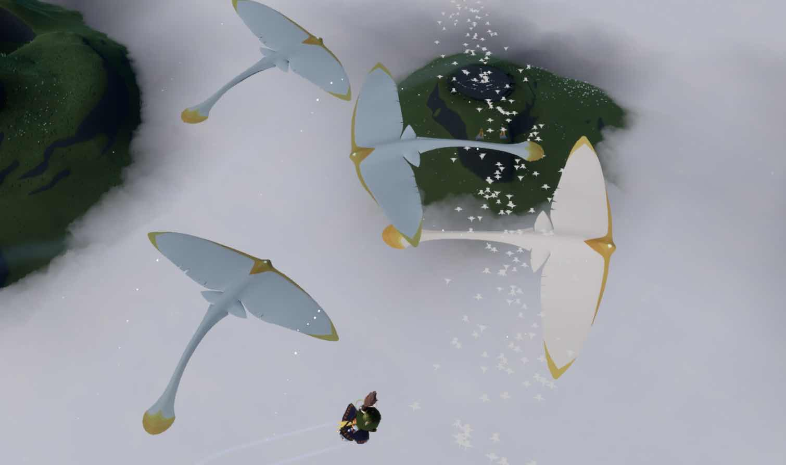
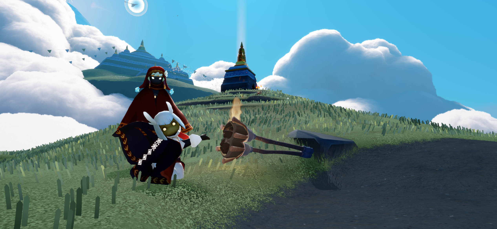
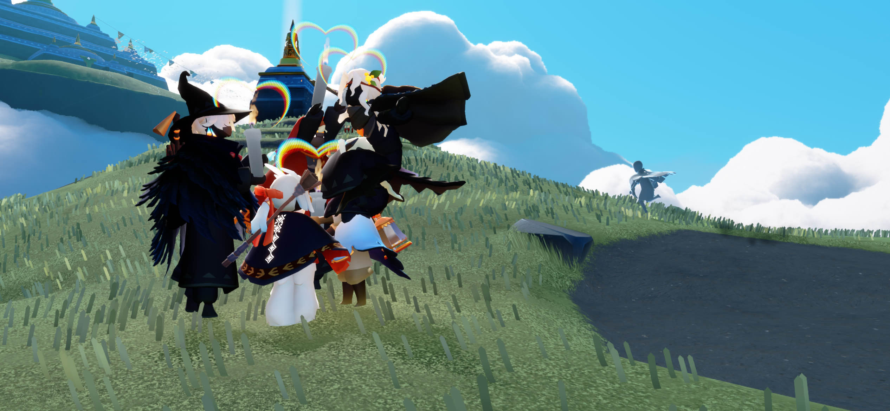
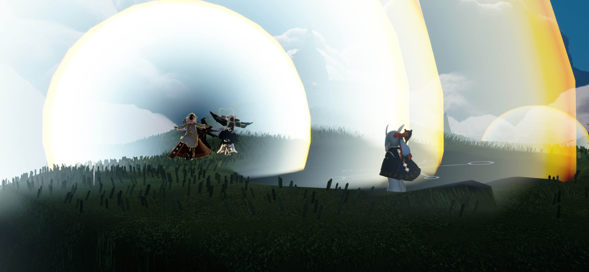

技術・知識
エアレに役立ちそうなものを集めました。
wiki「基礎編open_in_new」も併せてご覧ください。
動画が再生できない方はこちらopen_in_new

メンテナンス中です。公開をお待ちください。
雑学
非情なちょうちょ


ちょうちょは、大人数で練習しているといなくなります。
エナジーの回復をちょうちょに頼るのは避けましょう。
乗れないマンタ

草原村エリアにはたまに4匹目のマンタが出現します。
彼には乗ることができないため、マンタを使ったコース取りを考えている場合はよく確認しましょう。
見分け方として、乗れる3匹に比べて色が白いです。
様々な回復方法
発着地点でのエナジー回復には様々な方法があります。
近くの雲を触る
白キャンを持つ
大鳴きする
フレエモを行う
松明やトーチなどの回復アイテムの利用
シェアスペなどのプレイヤー創作物の利用



なお、とらのこエアレコースは基本的に発着地点の付近に雲があり、回復は容易です。
白キャンドルや松明などのアイテムを使用した回復がルールに抵触することはありませんが、アイテムがゴール時に干渉しないよう留意が必要です。（松明に当たって着地するなど）
過去の遺物
過去の仕様ではドリフトと呼ばれるテクニックがありました。
パフォーマンス優先モード(60fps)に設定することで、滑り降り後に空中での方向転換が容易にできていました。
現行の仕様では接地後の空中での自由度が低いことに留意が必要です。
気軽なスタート方式
公式大会以外でレースをする場合、大鳴き3回の後にスタートするケースが多いです。
大鳴きをしてもピボット状態からのスライド準備は継続されます。
配慮
・チャットのタイミング
フレンドが飛行中は、誤タップを防ぐため、チャットは控えめにするか邪魔にならないところに移動しましょう。
・野良の手伝い
晴れ間でのパン焼きや、複数人必要な扉などはできるだけ協力しましょう。